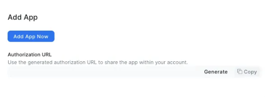
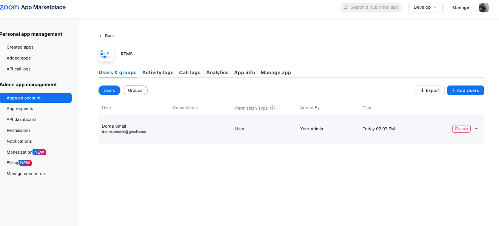
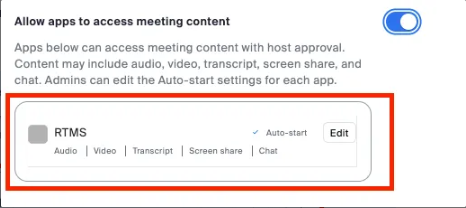

This codelab is part 10 of 10 in a series focused on extending a Next.js Task Manager app into the Zoom Developer Platform. Throughout this series, you'll learn how to create a feature-rich Zoom Marketplace app that both integrates third-party applications into Zoom products and brings Zoom functionality into third-party applications. In this series, you will learn core concepts for building engaging experiences within the Zoom Workplace—including Zoom Apps, Team Chat, chatbots, and features for deep linking from browser to Zoom client.
How to use this codelab
This codelab is organized by product to help you quickly find information about integrating your app into the Zoom Workplace platform. Each section provides concise, practical code examples that you can adapt to your use cases, along with links to deeper resources on specific topics. For implementation guidance, you can focus on the specific topics most relevant to your needs.
Part 1: Create a multi-feature Zoom app with a manifest file: Team Chat, Chatbot and Meetings
Part 2: Setup development environment: Zoom, Ngrok, and Supabase developer accounts
Part 3: Install and authorize multi-feature app integration: Zoom App, Team Chat, and Supabase Auth
Part 4: Integrate multi-feature Zoom app integration: Chatbot and Team Chat
Part 5: Integrate multi-feature app integration: Team Chat
Part 6: Integrate multi-feature app integration: Deep Linking
Part 7: Integrate multi-feature app integration: Webhooks
Part 8: Integrate multi-feature app integration: Slash Commands
Part 9: Integrate multi-feature app integration: Zoom App SDK
Part 10: How to enable Zoom Apps Real Time Media StreamK
⚠️ Warning: This guide assumes you're familiar building within the Zoom Workspace. You can start here or go back to the beginning of the full guide if you're new to Zoom App development.
üí° Tip: If you don't have a paid workspace for development, you can join the Developer Program and provision a sandbox with access to all Zoom Developer platform features for free.
Build a Zoom App with integrated authorization flows for both Zoom and third-party services using Supabase.
- How to implement secure session management and authentication using middleware, Redis, and Supabase tokens
- How to create deep linking functionality to seamlessly connect external apps with the Zoom client
- How to handle URL parameters, context decryption, and state management in a Zoom App environment
What you'll need
- Git
- Node.js
- Browser
- Code editor and terminal
Prerequisites
- A Zoom Developer Account
- A Supabase Account
- A Ngrok Account
- A Upstash Account (Redis Cache)
- Clone the project and switch to the correct branch:
git clone https://github.com/zoom/task-manager-sample.git
cd task-manager-sample
git checkout step-10-enableoom-app-rtms
- Install dependencies and start the app:
npm install
npm run dev
Now, you have a Task Manager application that implements RTMS.
RTMS is a data pipeline that gives your app access to live audio, video, and transcript data from Zoom Meetings. RTMS-enabled apps support AI and machine learning use cases and eliminates the need for participant bots or automated clients.
Resources
- Only apps already added for all users can be selected to open at meeting start for all groups and users.

- If the app is not already added to your account, in the Zoom Marketplace.
- On the local test of your app, select add app: 
- Then to add the app for all users, find it on the App in the development tab:
https://marketplace.zoom.us/user/installed- Click the app and select ‘Add for Others':

- Confirm RTMS enabled app is added to the account:

- Select the app to add user, check activity, call logs, app info, and manage the app: 
- Navigate to the Zoom Apps account setting page:
https://us06web.zoom.us/account/setting?tab=zoomapps
- In Zoom Account setting, click enable allow apps to access meeting content
- Click Edit to configure the RTMS app:

- Then enabled Auto-start so the app can automatically access meeting content:
- Enable auto-open an app in meetings: